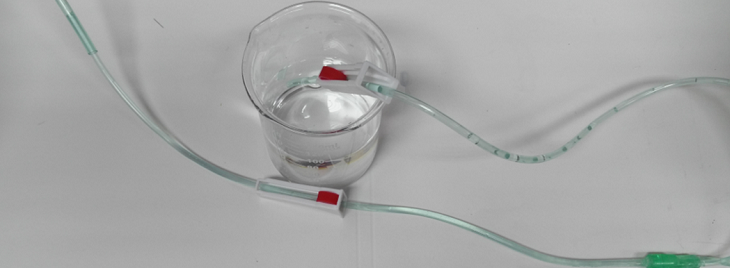

An Open Source pH Stat

Here's a paper by Jovana Milanovic ,Predrag Milanovic , Rastislav Kragic, and Mirjana Kostic which describes how to make a pH Stat to set and maintain a pH for under $200 excluding the cost of a pH meter.


Here's a paper by Jovana Milanovic ,Predrag Milanovic , Rastislav Kragic, and Mirjana Kostic which describes how to make a pH Stat to set and maintain a pH for under $200 excluding the cost of a pH meter.